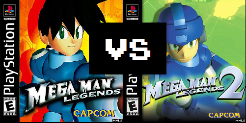

Rather a bit dissapointed - A critical look at Megaman Legends 2

So I just got done playing MML1 (2nd time) and MML2 (1st time playing). I have to say, I prefer MML1 to MML2 by quite a bit. MML2 was great
in many ways, such as the diverse and unique special items, but in a lot of other ways it was not only a letdown but a downgrade from what MML1
offered. Here are my major gripes:
Main Issues
1) Gameplay development takes a turn for the worse after Saul Kada ruins. What happens to future fights with Glyde? Not just a train ride
nonsense battle? Future fights with Claymore? Bola? Future fights with Bonnes?? The train ride is just kind of dull, and ultimately not what
I was looking for. No side dungeon in Calica either? The ice dungeon is great, but then they give you shoes to nullify the most interesting
mechanic of the dungeon? I just kept the shoes off for fun. Elysium? Seriously disappointing... the final boss fight was the only interesting
bit, and the rest seemed tedious and rehashed, even the enemies felt like slight remakes of old encounters.
2) Storyline development, ignoring the intro cutscenes and the major memory recollection part, is really, really stale. Yes, I know
it's for kids, but even at 10 years old, after you repeat to me for the 3rd time that I can "either fulfill the system's wishes or destroy it",
I damn well expect to be able to do just that - or at least see some bit of complexity to the plotline. Da fu', Capcom? If there was never an
option, why make a social commentary out of something that just doesn't apply? It's really not teaching kids anything, as it basically insists
that there was only ever one option to pursue: save the humans and Terra. But why not make it interesting? Why not give us an evil Megaman
Trigger copy as the miniboss prior to Sera? Such a letdown. I won't even get started on the fact that the plot initially follows Megaman and
Roll seeking her parents, only to throw that to the wind and have Joe go off with his new family, Roll's mother be possessed by a robot for
eternity (what body is she going to take after she gives hers to Sera?), and basically no one give any care whatsoever to their disappearance
in the end. Where goeth Bola, Claymore, Glyde, and the Bonnes? Oh, look, the Bonnes are around for a final cutscene... whoop-dee-do...
3) Exploration. This one hurts the most... something that was beautifully entertaining about MML1 was the haunting suspicion that you had no
idea what was coming next, that the next room may lead to another room that leads to another room that leads to a whole other ruin that then
leads to another ruin itself... MML2 is much, much more linear, and disappointingly so. It feels trapped around confines that didn't exist in
MML1, striving to create very specific dungeons while not tying in that endless-dungeon-where-do-I-go-next-what-will-be-around-this-corner
feeling. It tries hard to pull it off with some unique designs (I liked the cackling zenny-hungry sister-bots and their stalking presence in
the bird island side ruins), but in the end, it just never gets the same feeling. Where is the interconnected dungeon plot? The endless depths
of the ruins of the Ancients? No connection whatsoever, all segregated. Expecting a new ruins in the aftermath of the Forbidden Island's
seal-breaking? Nope, nothing, not even a scent of anything, and Roll herself seems remiss over that fact. How about in Elysium? Before we get
into the dungeon, we here about all these separate sections we have to enter... but really, it's just one linear path and then a bunch of
segregated, boring islands with no enemies on them... Oh, and then a repetitively-laid out boss rush to the final boss chamber.
(Edit: Oh yes, I forgot to add that you don't ever get to fight on top of the Flutter, enter that random ruin-like entrance by the
docking port of Nino Island (you jump and pull down the lever, the platform lowers and there's a sizable darkened entrance, but nothing!),
or access the two side-doors of the church in Yosyonke. Ugh, so many missed opportunities, in my opinion. Oh well. Still fun, just not as fun
as it could have been, I think.)
(Edit 2: Perhaps another large discrepancy I had was the lack of wall-treasures, or the little hidden holes-in-the-wall filled with zenny/part
upgrades/special weapon items/side quest goodies. Yes, there are some in the game, mostly in the 3 side dungeons, but they seem rather obvious,
as if they wanted to make sure everyone could find it. Sort of kills the enjoyment of hunting for them, really.)
4) Music wasn't a strong point either. MML1 had a very memorable menu theme song, and a lot of the ruins had some really creepy ambience
going on, but sadly, MML2's best tracks are arguably those from MML1 and maybe one or two others that you happened to like. Nothing truly
memorable, and the repetitive monotony of the ice dungeon just bored me to tears. Some of the tracks are good, yes, but nothing to dwell
on with nostalgia, in my opinion.
Synopsis
After ranting here, I gave it some thought and compared my criticism to MML1, and I have to say that MML1 does have plenty of issues of its
own. But ultimately, there is an originality to MML1's dungeon layout and overall sense of mystery that is simply not there in MML2. MML2 tries
hard to reach that same forte, but it constantly struggles with the theme, instead delving back into a more linear style of RPG. Even when it
tries its hands at something MML1 didn't do, like random encounters out on the icy or grassy plains, it feels a bit rushed, the enemies are
nowhere near as frightening or shocking - you know it's coming, and it's nothing special after the 3rd time it happens.
It almost feels like midway through production, Capcom realized it had a budget to work with and decided to cut out a lot of the content they
had planned for MML2. Even some of the storyline seems to hint at this: Bola is prepping you for a 2nd encounter by the end of the forest ruins,
Claymore does the same in the water ruins, and the Bonnes? Well, I think we all expected one final showdown with the Bonnes that simply never
showed up. The train encounter with the pirates was perhaps my biggest gripe with the game. It felt really lackluster, and the 2nd portion of
the fight is just point and shoot... nothing like the glider-fight from MML1. Okay, so we get Ancient fights instead with Gates or whatever
his name is. Was that a well-made fight? Not really. Shockingly repetitive, to the point where even the dialogue is being rehashed within
half the fight's time.
It really feels like more was planned for this game and it simply fell through. When you finish the train fight, you get a quick-access path
to the end of the icy plains, which is a dead-end with a train door... Megaman, push the door open! Let's go further! Doesn't happen. I can
count numerous situations where I expected some secret to be opened up later on: the many locked doors in Yosyonke, the seemingly side-questy
characters that never give side quests (pig lady? the item collection for the two kids who are studying? the unopened doors in Glyde's bird
fortress?), and of course, the glaring one to me, the lack of anything on Forbidden Island after the massive hype of having to land there
and explore it, just to open some seal and find no ruins nearby).
I think, with what MML1 works with mechanics-wise, it's just more original, more entertaining, and an artistically complete experience.
I'm frankly not surprised now that MML3 was never made, as I can see why: Capcom either lost the motivation to be original with this
dungeon format, or they simply wanted to return to a basic formula that was easy to do and easy to replicate. And so we have MML2 striving to
do both at once, being both grand and small, never becoming a true masterpiece like its mechanics, plotline, and characters invited it to be.
Oh well! Honestly, a MML3 would probably be more exciting coming from the community than Capcom, assuming the vision remains the same over
there. If they reworked their formula back to its MML1 format, we might have a solid, unique RPG, but I doubt it will happen.
Perhaps the community can be the purifier the system needs? All it takes is some effort and commitment, after all, to change the way
things are.